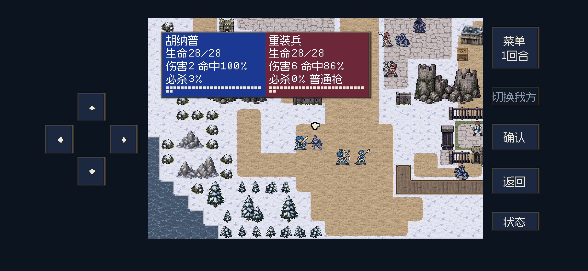

方向键：恢复按钮大小，只收紧实际间距
上次缩小过头了。按钮材质有透明边，我直接按整块绘制矩形计算重叠，忽略了图片实际可见的边框。
绘制框从43×43改成35×35，看似只少8像素；透明边仍占原来的宽度，可见部分却从约33×31变成25×23，面积少了约44%，因此看起来明显偏小。
已恢复原先的43像素绘制宽度，按材质上下透明边补偿高度，使可见按钮为33×33，再按可见边框排列。触控范围覆盖整个按钮及边缘，四键互不重叠。此前约10屏幕像素左调保留。
前后运行对照
 上次：可见按钮约25×23，空隙偏大
上次：可见按钮约25×23，空隙偏大
本次：恢复原先宽度；可见按钮33×33，外围103×103逻辑像素实际尺寸与点击
| 项目 | 本次尺寸（逻辑像素） |
|---|
| 位图绘制区域，含透明边 | 43×45 |
| 可见按钮 | 33×33 |
| 单键点击范围 | 35×35 |
| 四键可见外围 | 103×103 |
按实际位图透明度检查边界；箭头和按下光晕对齐可见按钮。窄屏仍保留边框间距与中央内容的安全距离，最窄支持窗口按可用空间小幅适配。
定向检查
121项无窗口逻辑、139项后台画面与布局检查通过。覆盖原图透明边测量、可见边框正方形、点击覆盖、触控互不重叠、中央内容避让、四键真实按下／松开、状态页右键切换以及宽屏、窄屏、最小窗口。
本轮仅调整方向键及对应检查；武器命中与双救经验奖励的源文件校验保持一致。未安装或更新iPhone。
逻辑结果 · 后台检查 · 图片尺寸／体积与源文件校验
截图均为原尺寸无损WebP；原始PNG保存在source/direction-size-fix-20261103/screenshots。